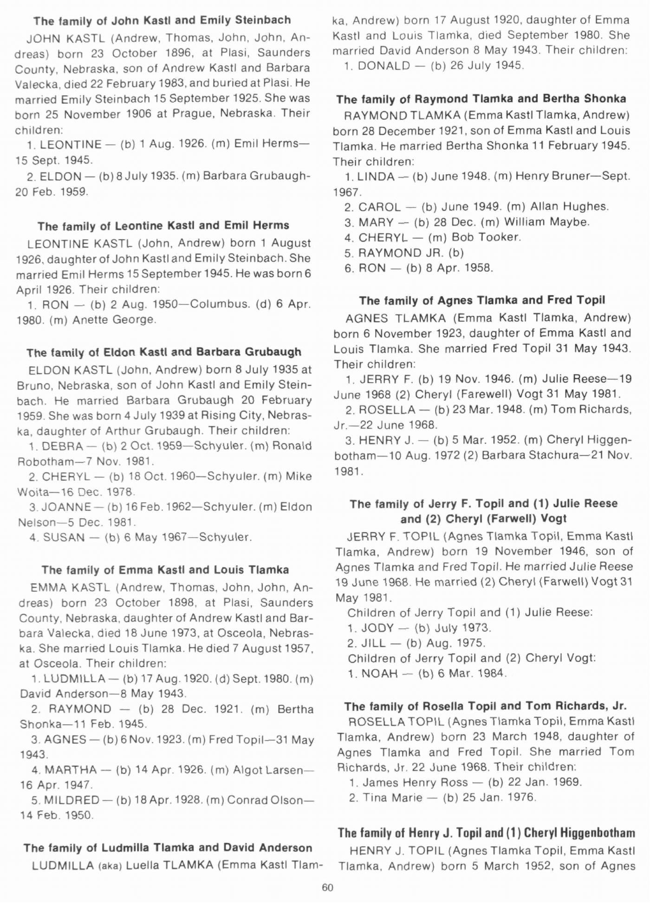

The book · The Family of Andrew Kastl
Page 60 The family of John Kastl and Emily Steinbach


Transcription
The family of John Kastl and Emily Steinbach
JOHN KASTL (Andrew, Thomas, John, John, Andreas) born 23 October 1896, at Plasi, Saunders County, Nebraska, son of Andrew Kastl and Barbara Valecka, died 22 February 1983, and buried at Plasi. He married Emily Steinbach 15 September 1925. She was born 25 November 1906 at Prague, Nebraska. Their children:
- LEONTINE — (b) 1 Aug. 1926. (m) Emil Herms—15 Sept. 1945.
- ELDON — (b) 8 July 1935. (m) Barbara Grubaugh-20 Feb. 1959.
The family of Leontine Kastl and Emil Herms
LEONTINE KASTL (John, Andrew) born 1 August 1926, daughter of John Kastl and Emily Steinbach. She married Emil Herms 15 September 1945. He was born 6 April 1926. Their children:
- RON — (b) 2 Aug. 1950—Columbus. (d) 6 Apr. 1980. (m) Anette George.
The family of Eldon Kastl and Barbara Grubaugh
ELDON KASTL (John, Andrew) born 8 July 1935 at Bruno, Nebraska, son of John Kastl and Emily Steinbach. He married Barbara Grubaugh 20 February 1959. She was born 4 July 1939 at Rising City, Nebraska, daughter of Arthur Grubaugh. Their children:
- DEBRA — (b) 2 Oct. 1959—Schyuler. (m) Ronald Robotham—7 Nov. 1981.
- CHERYL — (b) 18 Oct. 1960—Schyuler. (m) Mike Woita—16 Dec. 1978.
- JOANNE — (b) 16 Feb. 1962—Schyuler. (m) Eldon Nelson—5 Dec. 1981.
- SUSAN — (b) 6 May 1967—Schyuler.
The family of Emma Kastl and Louis Tlamka
EMMA KASTL (Andrew, Thomas, John, John, Andreas) born 23 October 1898, at Plasi, Saunders County, Nebraska, daughter of Andrew Kastl and Barbara Valecka, died 18 June 1973, at Osceola, Nebraska. She married Louis Tlamka. He died 7 August 1957, at Osceola. Their children:
- LUDMILLA — (b) 17 Aug. 1920. (d) Sept. 1980. (m) David Anderson—8 May 1943.
- RAYMOND — (b) 28 Dec. 1921. (m) Bertha Shonka—11 Feb. 1945.
- AGNES — (b) 6 Nov. 1923. (m) Fred Topil—31 May 1943.
- MARTHA — (b) 14 Apr. 1926. (m) Algot Larsen—16 Apr. 1947.
- MILDRED — (b) 18 Apr. 1928. (m) Conrad Olson—14 Feb. 1950.
The family of Ludmilla Tlamka and David Anderson
LUDMILLA (aka) Luella TLAMKA (Emma Kastl Tlamka, Andrew) born 17 August 1920, daughter of Emma Kastl and Louis Tlamka, died September 1980. She married David Anderson 8 May 1943. Their children:
- DONALD — (b) 26 July 1945.
The family of Raymond Tlamka and Bertha Shonka
RAYMOND TLAMKA (Emma Kastl Tlamka, Andrew) born 28 December 1921, son of Emma Kastl and Louis Tlamka. He married Bertha Shonka 11 February 1945. Their children:
- LINDA — (b) June 1948. (m) Henry Bruner—Sept. 1967.
- CAROL — (b) June 1949. (m) Allan Hughes.
- MARY — (b) 28 Dec. (m) William Maybe.
- CHERYL — (m) Bob Tooker.
- RAYMOND JR. (b)
- RON — (b) 8 Apr. 1958.
The family of Agnes Tlamka and Fred Topil
AGNES TLAMKA (Emma Kastl Tlamka, Andrew) born 6 November 1923, daughter of Emma Kastl and Louis Tlamka. She married Fred Topil 31 May 1943. Their children:
- JERRY F. (b) 19 Nov. 1946. (m) Julie Reese—19 June 1968 (2) Cheryl (Farewell) Vogt 31 May 1981.
- ROSELLA — (b) 23 Mar. 1948. (m) Tom Richards, Jr.—22 June 1968.
- HENRY J. — (b) 5 Mar. 1952. (m) Cheryl Higgenbotham—10 Aug. 1972 (2) Barbara Stachura—21 Nov. 1981.
The family of Jerry F. Topil and (1) Julie Reese and (2) Cheryl (Farwell) Vogt
JERRY F. TOPIL (Agnes Tlamka Topil, Emma Kastl Tlamka, Andrew) born 19 November 1946, son of Agnes Tlamka and Fred Topil. He married Julie Reese 19 June 1968. He married (2) Cheryl (Farwell) Vogt 31 May 1981.
Children of Jerry Topil and (1) Julie Reese:
- JODY — (b) July 1973.
- JILL — (b) Aug. 1975.
Children of Jerry Topil and (2) Cheryl Vogt:
- NOAH — (b) 6 Mar. 1984.
The family of Rosella Topil and Tom Richards, Jr.
ROSELLA TOPIL (Agnes Tlamka Topil, Emma Kastl Tlamka, Andrew) born 23 March 1948, daughter of Agnes Tlamka and Fred Topil. She married Tom Richards, Jr. 22 June 1968. Their children:
- James Henry Ross — (b) 22 Jan. 1969.
- Tina Marie — (b) 25 Jan. 1976.
The family of Henry J. Topil and (1) Cheryl Higgenbotham
HENRY J. TOPIL (Agnes Tlamka Topil, Emma Kastl Tlamka, Andrew) born 5 March 1952, son of Agnes
Transcriber’s notes
Left column ends mid-sentence ('Emma Kastl Tlam-') and continues at top of right column ('ka, Andrew)...'); the joined word is given in the body. Right column ends mid-sentence ('son of Agnes') and continues on the next page. ELDON list item has a short hyphen rather than a dash before the date ('Grubaugh-20 Feb. 1959'), kept as printed. Jerry Topil's second wife printed 'Farewell' in the list but 'Farwell' in heading and text. 'Schyuler' as printed. The Henry J. Topil heading is set in a different, condensed bold typeface. OCR misreads 'July 1973' (JODY) as 1978; image clearly shows 1973.